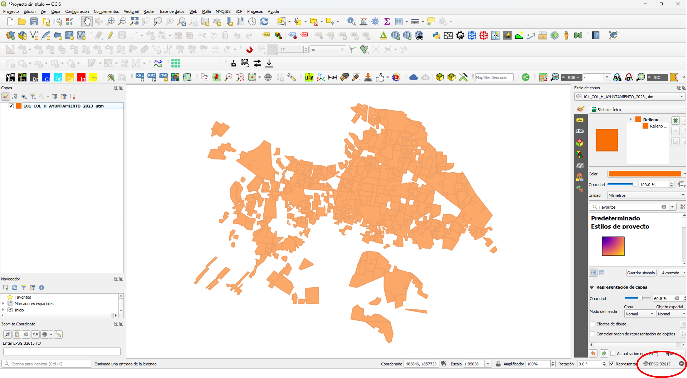
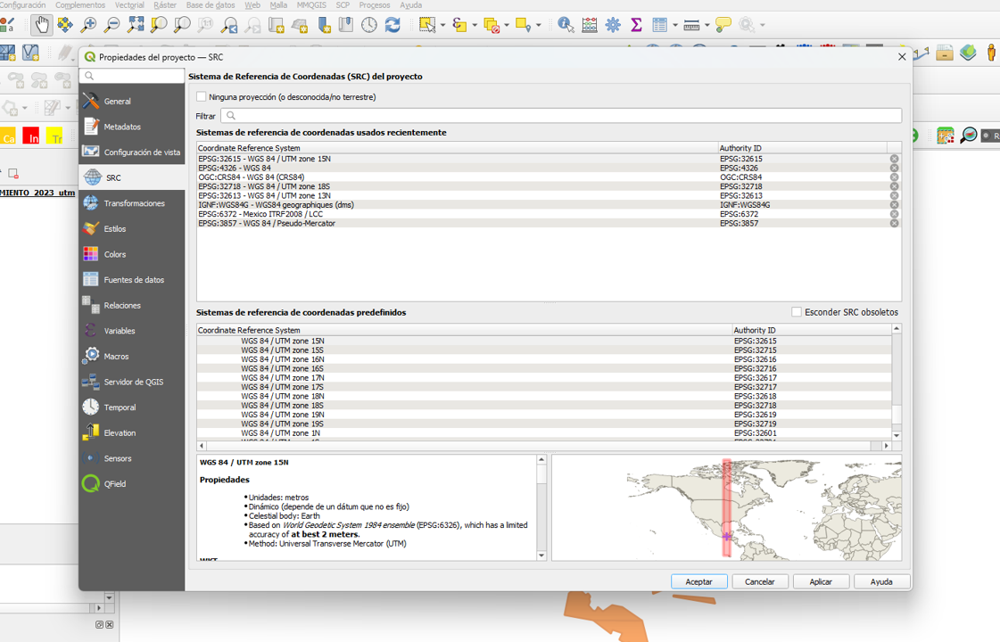
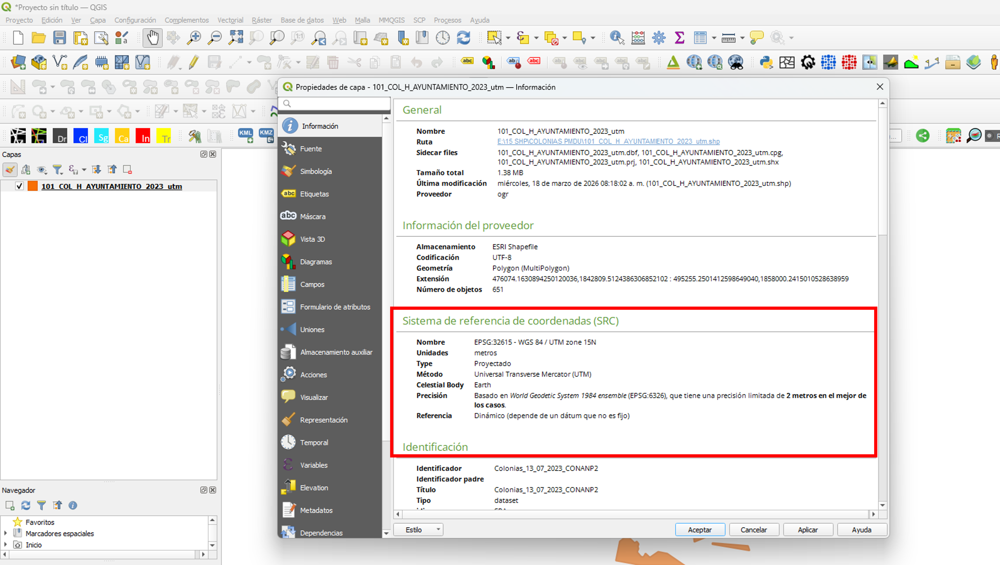
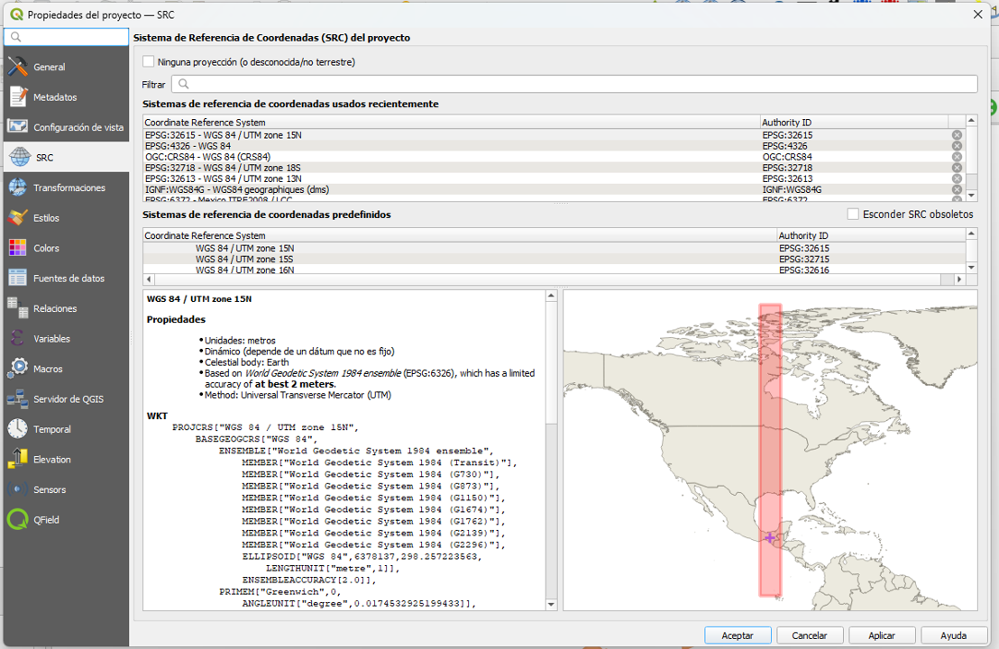
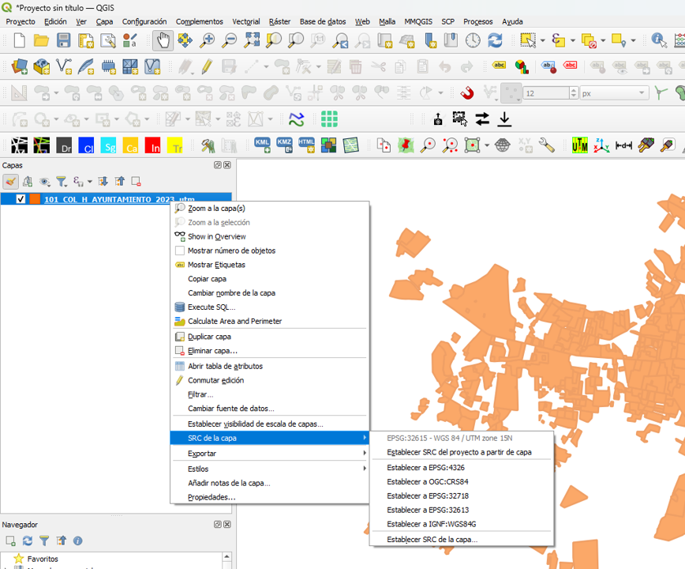

Una guía amigable para entender sistemas de coordenadas, proyecciones y códigos EPSG sin perderse en el intento.
Antes de hablar de proyecciones y códigos EPSG, descubre cómo los Sistemas de Información Geográfica transforman el mundo real a través de los datos.
Ir a la Introducción TeóricaDescubre la diferencia entre modelos vectoriales y ráster, y aprende a organizar ortofotos, curvas de nivel y polígonos.
Ver Lección del Día 2Aprende a consultar tablas de atributos y a transformar datos abstractos en visualizaciones de ingeniería mediante simbología categorizada y graduada.
Ver Lección del Día 3El reto cartográfico es pasar los datos del mundo real a tu pantalla sin que todo se deforme.

Cada sistema de coordenadas en el mundo tiene un Número de Identificación Único (Código EPSG). Toca las tarjetas para descubrir los más importantes:
Toca para revelar
El Rey Global. Usa grados (lat/long). Perfecto para ubicar puntos con GPS en cualquier parte del planeta.
Toca para revelar
El Estándar Web. Usa metros. Es el sistema que utilizan Google Maps, OpenStreetMap y casi todos los mapas en internet.
Toca para revelar
La Lupa Local. Usan metros. Son 'tiras' o franjas específicas del mundo para trabajar con máxima precisión en tu país o región.

Es el sistema en el que fueron guardados tus datos originalmente. QGIS lo lee automáticamente.
No lo cambies a menos que sepas que está mal.

Es cómo quieres ver y medir todo en tu pantalla en este momento.
Puedes cambiarlo en la esquina inferior derecha cuantas veces quieras sin dañar tus archivos originales.

Averigua qué código EPSG (UTM o sistema nacional) se usa oficialmente en tu país o área de estudio.
Si necesitas calcular áreas o distancias, asegúrate de que tu Proyecto esté en un Sistema Proyectado, no en grados.
Deja que el software asigne automáticamente el CRS a las capas que importas. No lo fuerces.
Haz clic derecho en tu capa principal y usa 'Establecer CRS del Proyecto desde Capa' para alinear tu lienzo rápidamente.

Descarga los datos de trabajo y acompáñame en los ejercicios guiados dentro de QGIS.
Ir al Laboratorio de EjerciciosRealiza un breve ejercicio para poner a prueba tus conocimientos sobre QGIS y EPSG.
Ir al Cuestionario Interactivo